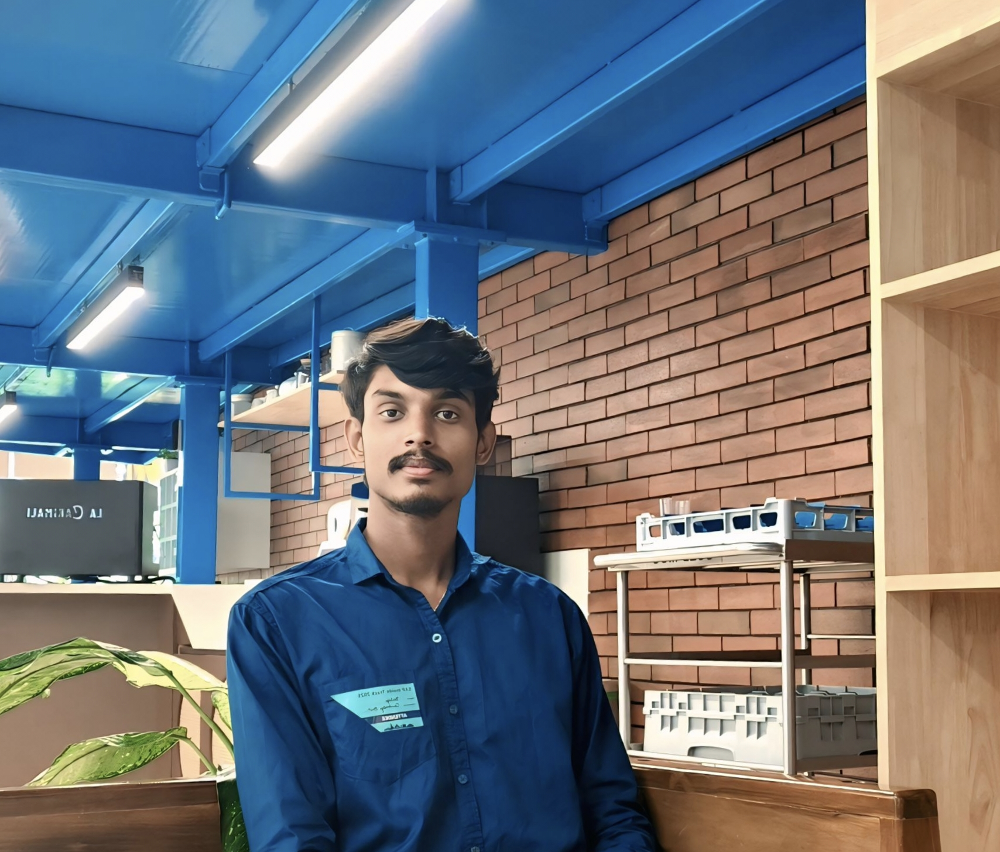

Meet Our Team
Karthik B
Project Owner
Manoj S Naik
Developer
Maruthi Reddy
Tester
Gemini G
Security

Balaji C S
DevScope
Ashuthosha
Deployment

Aditya
Tester
Empowering farmers with smart solutions for a sustainable future.
Explore ProjectsCrop disease Detection is a crucial aspect of modern agriculture, leveraging AI and machine learning to detect and prevent plant diseases before they spread. By analyzing images, environmental conditions, and historical data, AI-powered models can accurately identify diseases and recommend effective treatments.
This technology helps farmers reduce crop losses, optimize resource use, and enhance food security. As someone passionate about revolutionizing agriculture through technology, I aim to develop innovative solutions that empower farmers with intelligent disease detection systems, ensuring a healthier and more sustainable agricultural future.
With the integration of remote sensing, IoT devices, and real-time monitoring systems, AI-driven crop disease prediction can further enhance precision agriculture. These technologies provide continuous data streams, allowing for early intervention and better decision-making. By adopting these advancements, farmers can move toward more efficient and environmentally friendly farming practices, ultimately improving global food production and resilience against agricultural challenges. This new paragraph highlights the role of advanced technologies like IoT and remote sensing in improving disease prediction. Let me know if you need any tweaks! 🚀
Rice Detection is a computer vision-based approach used to identify and classify rice grains for quality assessment, disease detection, or yield estimation. It typically involves image processing techniques, machine learning, or deep learning models (such as CNNs) to analyze rice grain characteristics like size, shape, and color.
Corn Detection is an AI-powered technique used to identify and analyze corn plants, kernels, or diseases in agricultural settings. It leverages image processing, machine learning, or deep learning models (such as CNNs or YOLO) to detect corn growth stages, classify healthy vs. diseased plants, and estimate yield..
Wheat Detection is a computer vision and AI-based approach used to identify, classify, and analyze wheat crops, grains, or diseases. It employs image processing, machine learning, or deep learning models (such as CNNs or YOLO) to detect wheat growth stages, assess grain quality, and identify diseases like rust or blight.
Potato Detection is an AI-driven technique used to identify and analyze potatoes in agricultural and industrial settings. It utilizes image processing, machine learning, or deep learning models (such as CNNs or YOLO) to detect potato plants, classify healthy and diseased tubers, and assess size and quality.
Crop disease detection involves using technology, including AI and machine learning, to identify plant diseases at an early stage, helping farmers take timely action to protect their crops.
AI-powered models analyze images of crops, environmental conditions, and historical data to accurately detect diseases and suggest treatments. These models can quickly identify patterns that might be missed by the human eye.
Data sources include images of infected crops These inputs help AI models make accurate predictions.
The accuracy depends on the quality and quantity of training data. Well-trained models can achieve over 90% accuracy in identifying common crop diseases.
Early detection helps reduce crop losses, minimizes the need for excessive pesticide use, and improves overall agricultural productivity by allowing timely intervention.
Many free or low-cost mobile apps and cloud-based AI tools are available, making crop disease detection accessible even to small-scale farmers.
Future advancements include drone-based surveillance, IoT sensors for real-time monitoring, and AI models that can provide treatment recommendations tailored to specific farm conditions.
Project Owner
Developer
Tester
Security
DevScope
Deployment
Tester
Made with love ❤ by Project-K